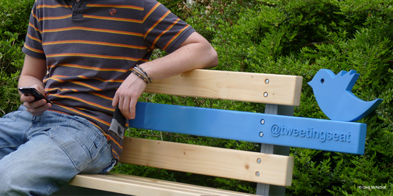

TweetingSeat is an interactive park bench which is designed to explore the potential for connecting digital and physical communities. The bench logs its usage by uploading images of its users and environment to a live Twitter feed, allowing people to interact with it both in person and virtually.
Created to explore the environments in which it is placed and the people whom it encounters, the aim of TweetingSeat is for people and communities to form their own relationship with the object through the way in which they choose to use it.